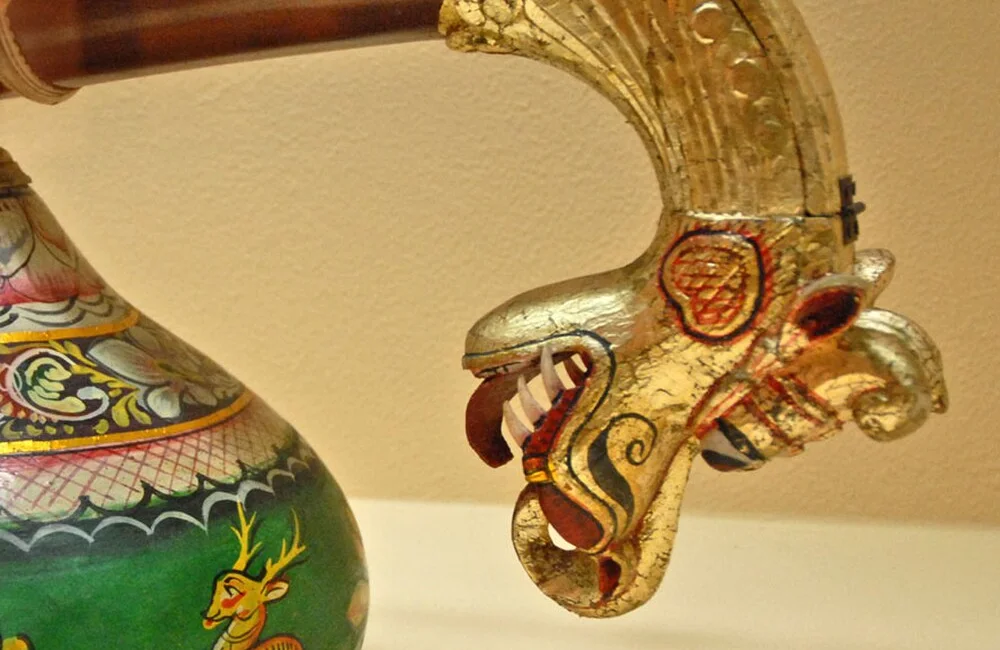

In his 13th-century treatise Sangita Ratnakara, Sarngadeva defines Gamaka with poetic economy: “Swarasya kampo gamakah srotruchitta sukhavahah”—the oscillation of a swara that brings delight to the listener’s consciousness. Nowhere in world music is this principle more physically visible than on the 24 scalloped brass frets of the Thanjavur Saraswati Veena.
1. Why the Veena Fretboard Is Built Over Concave Beeswax
Unlike Western fretted instruments where the fingertip presses the string directly against the wood between frets, the Saraswati Veena features elevated brass bars set into two parallel ledges of black forest beeswax mixed with fine charcoal andbrick dust. The space between two frets is intentionally hollowed out so the index and middle fingers of the left hand never touch the underlying wood. Instead, pulling the steel string laterally across the polished brass curve increases string tension smoothly—allowing a skilled vainika to traverse up to four semitones (from Gandharam to Dhaivatam) from a single fret!
“What appears to the eye as a horizontal pull of steel against brass is heard by the ear as the living breath of a Gayaka.”
2. The Four Essential Vainika Gamakas in Subbarama Dikshitar’s System
In the 1904 magnum opus Sangita Sampradaya Pradarsini, Subbarama Dikshitar classified the ten classical Dasha Vidha Gamakas specifically through the lens of veena technique:
Controlled Oscillation
Pulling the string repeatedly between two microtonal boundaries—such as pulling the Panchamam fret to oscillate across Kaisiki Nishadam in Raga Bhairavi.
Upper-Grace Inflection
Pre-deflecting the string slightly before the right-hand pluck and releasing it instantaneously onto the target swara, lending crisp authority to Tana Varnams.
Left-Hand Hammer-On
In Janta phrases (SS RR GG MM), the second note of each pair is articulated by striking the lower fret with the index finger while the middle finger holds the main fret.
Seamless Fret Glissando
Sliding horizontally along the length of the Sarani string across multiple frets while maintaining constant downward finger pressure.
Share a Scholarly Reflection or Question
Comments are moderated by our Musicology Chair and answered weekly.